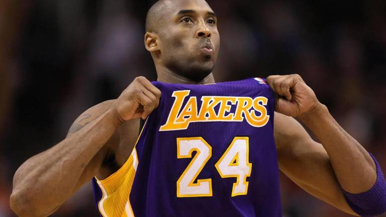

Kobe Bryant
23 de agosto de 1978, Filadelfia, Pensilvania, Estados Unidos
26 de enero de 2020, Calabasas, California, Estados Unidos

This is Kobe Bryant in a NBA match.
This is some informations about Kobe Bryant in his NBA career.
- MVP de las Finales de la NBA:2009, 2010
- 5 veces campeón de la NBA: 2000, 2001, 2002, 2009, 2010
- Bryant lanzando a canasta en un partido ante Golden State Warriors.
- 2 veces máximo anotador: 2006, 2007
- 18 veces All-Star: 1998, 2000, 2001, 2002, 2003, 2004, 2005, 2006, 2007, 2008, 2009, 2010, 2011, 2012, 2013,2014, 2015, 2016.
- 11 apariciones consecutivas (No hubo All-Star Game en el 99 Y se perdió el All-Star Game del 2010 por una lesión)
- MVP de la temporada regular: 2008
- 4 veces MVP del All-Star Game: 2002, 2007, 2009 2011
- Máximo anotador de la historia en el All Stars (año 2012)
- 11 veces en el mejor quinteto de la NBA: 2002, 2003, 2004, 2006, 2007, 2008, 2009, 2010, 2011, 2012, 2013
- 2 veces en el segundo mejor quinteto de la NBA: 2000, 2001
- 2 veces en el tercer mejor quinteto de la NBA: 1999, 2005
- 9 veces en el mejor quinteto defensivo de la NBA: 2000, 2003, 2004, 2006, 2007, 2008, 2009, 2010, 2011
- 3 veces segundo mejor quinteto defensivo de la NBA: 2001, 2002, 2012
- Segundo mejor quinteto de rookies: 1997
- Campeón del Concurso de Mates del All Star: 1997
- Líder en temporada regular:
- puntos: 2003 (2 461), 2006 (2 832, 7º en la historia), 2007 (2 430), 2008 (2 323)
- puntos por partido: 2006 (35.4, 9º en la historia), 2007 (31.6)
- tiros de campo intentados: 2006 (2 173), 2007 (1 757), 2008 (1 690)
- tiros de campo convertidos: 2003 (868), 2006 (978), 2007 (813)
- tiros libres intentados: 2007 (768)
- tiros libres convertidos: 2006 (696), 2007 (667)
- Segunda anotación más alta en un partido: 81, el 22 de enero de 2006 contra Toronto Raptors
- Jugador más joven en llegar a los 28 000 puntos187
- Jugador más joven en llegar a los 30 000 puntos138
- Jugador más joven en ser incluido en el mejor quinteto defensivo (1999-00)
- Jugador más joven en ganar el concurso de mates (18 años, 175 días) en 1997
- Uno de los tres jugadores capaces de anotar 35 o más puntos en 13 partidos consecutivos (los otros son Allen Iverson y LeBron James).
- Uno de los tres jugadores capaces de anotar 40 o más puntos en 9 partidos consecutivos (los otros son Michael Jordan y Wilt Chamberlain)
- Uno de los tres jugadores capaces de anotar 45 o más puntos en 4 partidos consecutivos (los otros son Allen Iverson y Wilt Chamberlain).
- Uno de los dos jugadores capaces de promediar 40 o más puntos por partido durante un mes entero en 2 ocasiones diferentes (40,6 en febrero de 2003 y 43,4 en enero de 2006; el otro es Wilt Chamberlain)